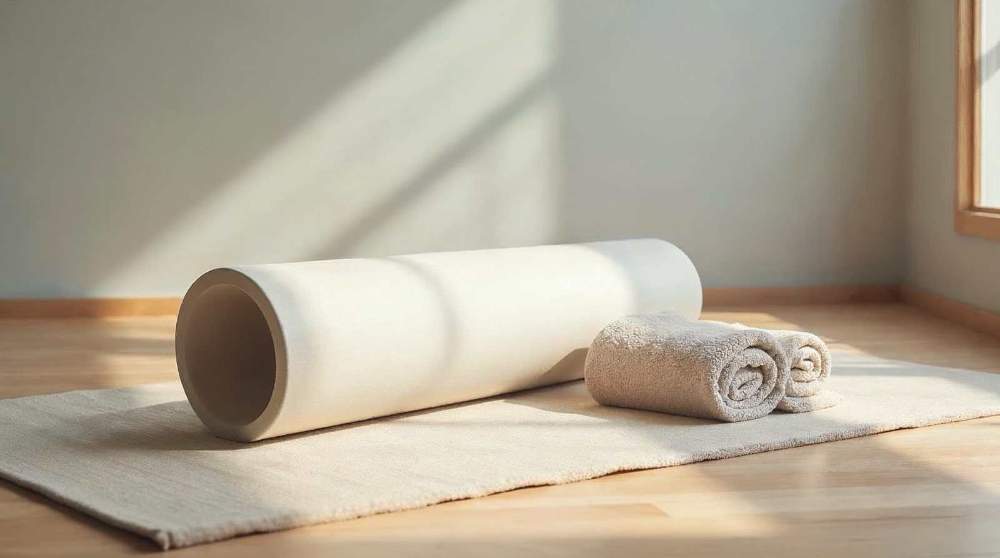
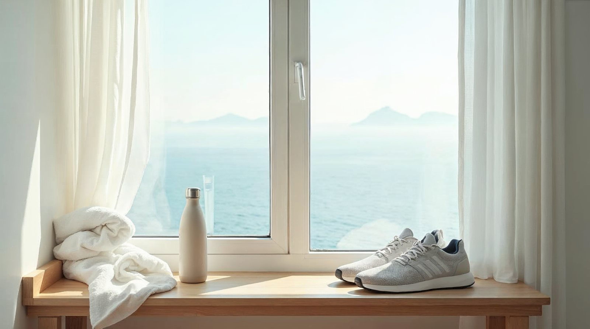
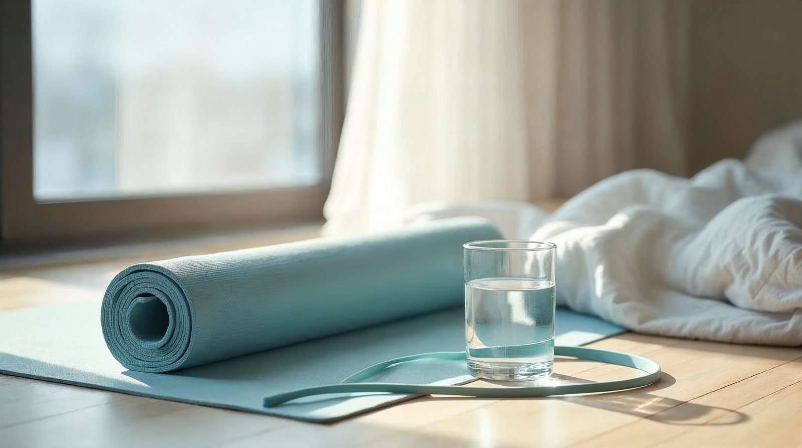
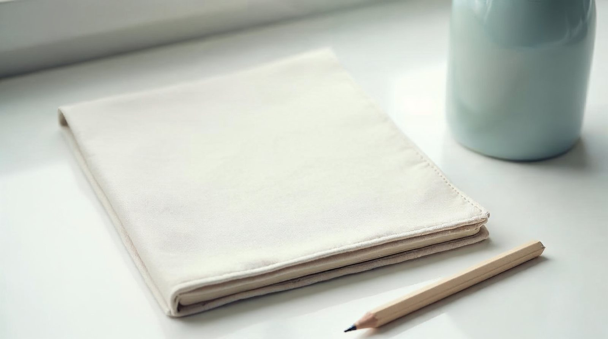
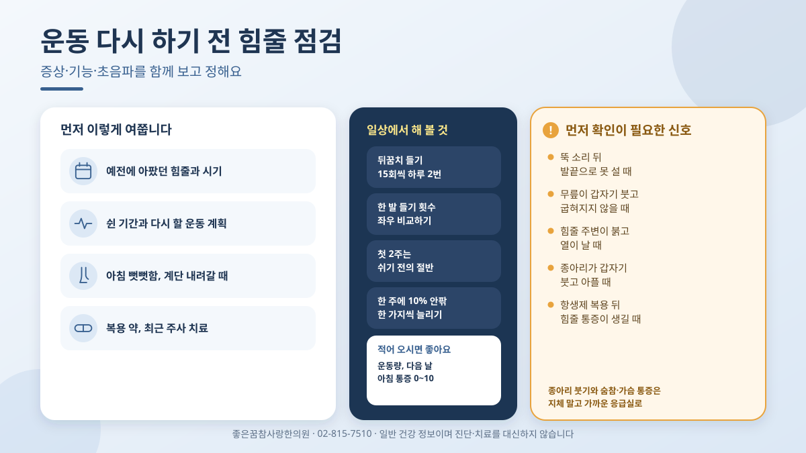

이종호 한의사 감수좋은꿈참사랑한의원 대표원장 (한의사 면허번호 19769)발행 2026-11-27 · 수정 2026-11-27
이 글의 차례
11월 들어 추워지면서 달리기와 축구, 배드민턴, 등산을 잠시 쉬었다가, 연말 휴가나 새해를 맞아 다시 시작하려는 분이 많습니다. 그런데 예전에 아킬레스건이나 무릎뼈 아래 힘줄이 아파 고생한 적이 있다면 "다시 뛰면 또 아프지 않을까" 하는 걱정이 앞서기 마련입니다.
힘줄은 근육보다 천천히 적응하는 조직이라, 몇 주에서 몇 달 운동을 쉬면 버틸 수 있는 부담도 함께 줄어듭니다. 이 상태에서 쉬기 전과 같은 거리와 강도로 바로 돌아가면 예전에 아팠던 힘줄이 가장 먼저 불편해지기 쉽습니다.
그래서 다시 시작하기 전에 지금 아픈 곳이 있는지, 한 발로 뒤꿈치를 들거나 얕게 앉았다 일어날 때 좌우 차이가 있는지를 먼저 확인하고, 필요하면 초음파로 힘줄의 두께와 결, 주변 붓기를 양쪽 비교해 보면 운동량을 정하는 데 참고가 됩니다. 초음파 모습만으로 운동 여부를 정하지는 않고, 증상과 기능을 함께 놓고 운동량을 늘려 갈 순서를 정합니다.
다만 '뚝' 하는 소리와 함께 걷기 어렵거나 발끝으로 서지 못한다면, 또는 무릎이 갑자기 붓고 굽히거나 펴지지 않는다면 지체하지 말고 정형외과나 응급실에서 먼저 확인이 필요합니다.
왜 겨울에 쉬었다가 다시 시작할 때 힘줄이 탈이 나기 쉬울까요
- 힘줄은 근육과 뼈를 잇는 단단한 끈입니다. 근육에 비해 피가 적게 드나들어 새 부담에 적응하는 데 몇 주에서 몇 달이 걸리고, 쉬는 동안에는 그만큼 버티는 힘도 서서히 줄어듭니다.
- 다시 운동을 시작하면 숨이 차는 느낌과 근력은 생각보다 빨리 돌아오는 듯합니다. 숨은 괜찮은데 힘줄은 아직 준비가 덜 된 상태라, 몸이 괜찮다고 느끼는 만큼 달리다 보면 힘줄이 먼저 무리하게 됩니다.
- 한 번 아팠던 힘줄은 겉으로는 괜찮아 보여도 예전보다 두꺼워져 있거나 결이 고르지 않은 채 남아 있는 경우가 있습니다. 이런 힘줄은 갑자기 늘어난 부담에 다시 예민해지기 쉽습니다.
- 추운 날 아침에는 근육과 힘줄이 뻣뻣하고, 몸이 데워지기까지 시간이 더 걸립니다. 준비 운동 없이 바로 뛰거나 점프하면 아킬레스건과 무릎 힘줄에 부담이 몰립니다.
- 겨울에는 실내 운동으로 바꾸는 분이 많습니다. 러닝머신 경사 걷기, 줄넘기, 실내 풋살, 점프가 많은 단체 운동처럼 평소와 다른 동작은 같은 힘줄을 다른 방식으로 씁니다.
- 쉬는 동안 체중이 늘었거나 신발을 바꾼 경우, 같은 거리를 달려도 힘줄이 받는 부담은 달라집니다.
- 한의학에서는 겨울에 찬 기운으로 근육과 힘줄이 움츠러들고 기혈의 흐름이 더뎌진다고 봅니다. 그래서 아팠던 자리만이 아니라 종아리와 허벅지의 굳은 정도, 발과 다리의 찬 정도, 몸 전체의 피로까지 함께 살핍니다.
지금 상태가 어떤지 나눠 볼까요
- 아킬레스건 중간 부분이 불편한 경우는 발뒤꿈치에서 손가락 두세 마디쯤 위가 아프거나 두툼하게 만져지고, 아침 첫걸음이나 오래 앉았다 일어날 때 뻣뻣하다가 걷다 보면 조금 풀리는 경우가 많습니다.
- 아킬레스건이 발뒤꿈치뼈에 붙는 자리가 불편한 경우는 발뒤꿈치 바로 뒤가 아프고, 딱딱한 신발 뒤축에 닿으면 더 아프며, 경사를 오를 때 심해집니다.
- 무릎뼈 아래 힘줄이 불편한 경우는 무릎뼈 바로 아래 한 점이 아프고, 점프 뒤 착지나 계단 내려가기, 깊이 쪼그려 앉기에서 시큰합니다. 오래 앉아 있다 일어날 때도 불편할 수 있습니다.
- 무릎뼈 앞이 말랑하게 붓거나, 무릎 전체가 붓고 굽히기 어렵다면 힘줄보다 관절 안쪽이나 점액낭 쪽을 함께 확인해야 합니다.
- 운동 중이나 다음 날 통증이 0~10 가운데 3~4를 넘지 않고 다음 날 아침 뻣뻣함이 더 늘지 않는다면 운동량을 조절하며 이어 갈 수 있는 경우가 많고, 이보다 아프거나 날마다 심해진다면 운동을 줄이고 확인을 받습니다.
먼저 이렇게 여쭙니다
- 예전에 어느 쪽 어느 힘줄이 언제, 어떤 운동을 하다 아팠나요? 그때 어떤 검사와 치료를 받으셨나요?
- 운동을 쉰 지 얼마나 되었나요? 쉬기 전에는 일주일에 몇 번, 어느 정도 거리나 시간을 하셨나요?
- 다시 시작하려는 운동은 무엇이고, 첫 주에는 어느 정도 하실 계획인가요?
- 지금도 아침 첫걸음이 뻣뻣하거나, 계단을 내려갈 때 시큰한 느낌이 있나요?
- 한 발로 뒤꿈치를 들거나 한 발로 얕게 앉았다 일어날 때 좌우 차이가 느껴지나요?
- 쉬는 동안 체중이 늘었거나 운동화를 바꾸셨나요?
- 최근에 힘줄 주변에 주사 치료를 받은 적이 있나요?
- 복용 중인 약이 있나요? 일부 항생제(퀴놀론 계열)나 스테로이드처럼 힘줄과 관련해 주의가 필요한 약을 드신 적이 있는지 여쭙니다.
- 당뇨나 류마티스 질환처럼 오래 관리 중인 병이 있나요?

일상에서 먼저 해 볼 수 있는 것
다시 시작하기 1~2주 전: 집에서 힘줄 깨우기
- 계단 끝에 앞꿈치만 걸치고 양발로 천천히 뒤꿈치를 들었다가 3초에 걸쳐 내리기를 15회, 하루 2번 합니다. 익숙해지면 한 발씩 합니다. 아팠던 곳이 아킬레스건이 뒤꿈치뼈에 붙는 자리였다면 계단 아래로 깊이 내리지 말고 평평한 바닥에서 합니다.
- 벽에 등을 대고 무릎을 30~45도쯤 굽힌 채 30초 버티기를 4~5번 합니다. 무릎뼈 아래가 아프지 않은 깊이에서만 합니다.
- 종아리와 허벅지 앞쪽을 천천히 늘리는 동작을 각각 30초씩, 하루 2번 합니다.
- 이 동작들을 하는 동안과 다음 날 아침의 통증을 0~10 숫자로 적어 둡니다.
혼자 해 보는 기능 점검
- 한 발로 서서 뒤꿈치를 끝까지 들었다 내리기를 몇 번 할 수 있는지 양쪽을 따로 세어 봅니다. 아팠던 쪽 횟수가 눈에 띄게 적다면 아직 준비가 덜 된 것일 수 있습니다.
- 한 발로 서서 의자에 앉듯 얕게 무릎을 굽혔다 펴기를 5회 해 보고, 무릎뼈 아래 통증과 무릎이 안쪽으로 무너지는지를 거울로 봅니다.
- 계단을 내려갈 때와 오래 앉았다 일어날 때 불편함을 0~10으로 적습니다.
첫 2주: 쉬기 전의 절반부터
- 첫 주는 쉬기 전 운동량의 절반 정도로 시작하고, 하루 운동하면 하루는 쉽니다. 달리기라면 걷기와 달리기를 1~2분씩 번갈아 하는 방식이 좋습니다.
- 운동량은 한 주에 10% 안팎으로만 늘립니다. 거리와 속도, 경사를 한꺼번에 늘리지 않고 한 가지씩 바꿉니다.
- 점프와 급하게 방향을 바꾸는 동작은 달리기에 익숙해진 뒤에 넣습니다.
- 운동 중 통증이 3~4를 넘거나, 다음 날 아침 뻣뻣함이 더 늘었다면 그다음 운동은 한 단계 낮춥니다.
추운 날 준비 운동과 시간
- 추운 아침보다 기온이 조금 오른 낮이나 실내에서 운동하는 편이 힘줄에 덜 부담스럽습니다.
- 실내에서 10~15분 몸을 데운 뒤 나갑니다. 제자리 걷기, 가벼운 스쿼트, 발목 돌리기, 뒤꿈치 들기를 이어서 합니다.
- 종아리와 발목을 덮는 운동복을 입고, 운동이 끝나면 땀이 식기 전에 갈아입습니다.
신발과 바닥
- 오래 신은 운동화는 뒤축과 밑창이 한쪽으로 닳지 않았는지 확인합니다. 새 신발로 바꿨다면 처음 1~2주는 짧은 거리만 신어 봅니다.
- 한강변이나 동네 공원 산책로처럼 평평한 길에서 시작하고, 언덕길과 계단 오르내리기는 뒤로 미룹니다. 상도동 오르막 골목은 익숙해진 뒤에 넣습니다.

상황별 예시
- 예를 들어 지난봄 마라톤을 준비하다 아킬레스건 중간이 아파 몇 달 고생했고, 11월부터 쉬다가 1월에 다시 달리려는 경우, 2주 전부터 뒤꿈치 들기를 시작하고 양쪽 횟수를 비교해 봅니다. 아팠던 쪽 힘줄이 두툼하게 만져지거나 아침 뻣뻣함이 남아 있다면 다시 달리기 전에 초음파로 양쪽 힘줄 두께와 결을 비교해 보고 운동량을 정합니다.
- 예를 들어 주말 배드민턴 모임에서 점프 스매시를 하다 무릎뼈 아래가 아팠던 적이 있는 경우, 겨울 실내 체육관 모임에 다시 나가기 전에 한 발 얕은 스쿼트에서 통증이 있는지 먼저 봅니다. 첫 몇 주는 점프 스매시를 빼고 랠리 위주로 하며, 다음 날 계단 내려갈 때의 시큰함을 기록합니다.
- 예를 들어 추위 때문에 바깥 달리기 대신 헬스장 러닝머신 경사 걷기를 매일 한 시간씩 시작한 경우, 경사 오르기는 아킬레스건에 부담을 주기 쉬워 발뒤꿈치 쪽이 불편해질 수 있습니다. 경사는 낮게 시작해 서서히 올리고, 평지 걷기와 번갈아 합니다.
- 예를 들어 운동을 쉬는 동안 체중이 몇 킬로그램 늘고 운동화도 바닥이 얇은 것으로 바꾼 경우, 같은 거리를 뛰어도 힘줄이 받는 부담이 커집니다. 인바디 770으로 근육량과 좌우 차이를 함께 확인해 보고, 신발은 원래 신던 것과 비슷한 쿠션으로 고릅니다.
초음파로 볼 수 있는 것과 한계
- 초음파로는 아킬레스건과 무릎뼈 아래 힘줄의 두께를 재고, 아팠던 쪽과 반대쪽을 나란히 비교할 수 있습니다.
- 힘줄의 결이 고르게 이어져 있는지, 일부가 어둡게 보이며 결이 흐트러진 곳은 없는지 살펴봅니다.
- 힘줄 주변에 물이 고였거나 붓기가 있는지, 발뒤꿈치 뒤나 무릎뼈 앞의 주머니(점액낭)가 부어 있는지도 함께 봅니다.
- 발목이나 무릎을 살짝 움직이며 힘줄이 어떻게 미끄러지는지 보기도 합니다.
- 다만 아프지 않은 힘줄도 두꺼워 보일 수 있고, 초음파 모습과 통증의 정도가 꼭 일치하지는 않습니다. 그래서 초음파 결과만으로 '운동해도 된다, 안 된다'를 정하지 않고, 증상과 기능 점검을 함께 놓고 판단합니다.
- 뼈 안쪽이나 무릎 관절 깊은 곳의 연골과 인대처럼 초음파로 보기 어려운 부분은 엑스레이나 MRI가 가능한 병원 검사를 안내해 드립니다.
자주 하는 오해
- 오래 쉬었으니 힘줄도 다 회복됐을 거라고 여기기 쉽지만, 쉬는 동안 버티는 힘도 함께 줄어 있어 갑자기 예전만큼 하면 다시 불편해질 수 있습니다.
- 아프지 않으면 초음파에서도 깨끗할 거라고 생각하기도 합니다. 예전에 아팠던 힘줄은 통증이 없어도 두께나 결의 변화가 남아 있을 수 있어, 모습과 증상을 함께 봅니다.
- 반대로 초음파에서 힘줄이 두꺼워 보이면 운동을 하면 안 된다고 걱정하는 분도 있습니다. 모습만으로 정하지 않고, 기능과 통증을 보며 운동량을 조절하는 경우가 많습니다.
- 스트레칭만 충분히 하면 된다고 여기기 쉽지만, 힘줄에는 늘리는 것보다 천천히 힘을 받는 연습이 더 중요한 경우가 많습니다.
- 아플 때마다 진통제를 먹고 운동을 이어 가는 분도 있습니다. 통증 신호를 가리면 운동량을 조절할 기준을 놓치게 됩니다.
스스로 점검해 보세요
- 예전에 아킬레스건이나 무릎뼈 아래 힘줄이 아파 운동을 쉰 적이 있다.
- 운동을 쉰 지 4주가 넘었다.
- 아침 첫걸음이나 오래 앉았다 일어날 때 그 자리가 뻣뻣하다.
- 한 발 뒤꿈치 들기 횟수가 좌우로 차이가 난다.
- 계단을 내려갈 때 무릎뼈 아래가 시큰하다.
- 첫 주부터 쉬기 전과 같은 거리와 강도로 하려고 한다.
- 쉬는 동안 체중이 늘었거나 운동화를 바꿨다.

한의원에서 함께 살필 수 있는 경우
- 다시 운동하기 전, 예전에 아팠던 힘줄 상태를 초음파로 양쪽 비교해 보고 싶은 경우
- 아침 뻣뻣함이나 계단 내려갈 때의 시큰함이 몇 주째 남아 있는 경우
- 운동을 다시 시작한 뒤 힘줄 통증이 조금씩 늘어나는 경우
- 힘줄 통증이 몇 달 넘게 이어져 체외충격파 상담을 받아 보고 싶은 경우
- 한쪽 힘줄을 아끼며 걷다 보니 반대쪽 다리나 허리까지 불편해진 경우
좋은꿈참사랑한의원에서는 첫 방문 때 문진으로 예전에 아팠던 힘줄과 그때의 경과, 쉬는 기간, 다시 시작하려는 운동과 계획을 먼저 여쭙고, 맥부터 짚어 봅니다. 진맥으로 몸 전체의 피로와 찬 정도를 살핀 뒤, 아픈 자리를 직접 눌러 보고 한 발 뒤꿈치 들기와 얕은 스쿼트처럼 기능을 함께 확인합니다.
필요하면 초음파로 양쪽 힘줄의 두께와 결, 주변 붓기를 비교하고, 화면을 함께 보며 설명해 드립니다. 몇 달 넘게 이어지는 힘줄 통증이라면 상태를 확인한 뒤 체외충격파(제우스·한일티엠)가 맞는지 상담하고, 침 치료와 운동량 조절 가운데 무엇부터 할지 순서를 정합니다. 뼈나 관절 안쪽 확인이 먼저라고 판단되면 영상 검사가 가능한 병원을 안내해 드립니다.
다음 진료에서는 지난번 말씀하신 운동량과 통증 기록을 이어서 여쭈어 비교합니다.
얼마나 지켜보고 언제 상담할까요
- 아픈 곳 없이 기능 점검에서도 좌우 차이가 크지 않다면, 첫 2주는 절반의 운동량으로 시작해 기록하며 지켜봅니다.
- 다시 시작한 뒤 통증이 3~4를 넘는 날이 이어지거나, 다음 날 아침 뻣뻣함이 일주일 넘게 점점 늘어난다면 운동을 줄이고 진료를 받아 함께 살펴보시길 권합니다.
- 예전에 아팠던 힘줄이 두툼하게 만져지거나 쉬는 동안에도 뻣뻣함이 남아 있다면, 운동을 다시 시작하기 전에 먼저 상담을 받아 보셔도 좋습니다.
- '뚝' 소리와 함께 걷기 어렵거나 무릎이 갑자기 부어 굽혀지지 않는다면 지켜보지 말고 먼저 병원에서 확인합니다.

이렇게 기록해 오시면 상담이 쉬워집니다
- 예전에 아팠던 힘줄과 시기, 받은 검사와 치료
- 쉬기 전과 다시 시작한 뒤의 운동 종류, 횟수, 거리나 시간
- 운동 중과 다음 날 아침의 통증을 0~10 숫자로
- 한 발 뒤꿈치 들기 횟수(양쪽 각각)와 얕은 스쿼트 때 통증
- 운동화 종류와 바꾼 시기, 체중 변화
- 복용 중인 약과 최근 받은 주사 치료
이런 증상은 먼저 확인이 필요합니다
- 운동 중 '뚝' 소리나 뒤에서 걷어차인 듯한 느낌 뒤 걷기 어렵고 발끝으로 서지 못하는 경우
- 아킬레스건을 만졌을 때 움푹 팬 곳이 느껴지는 경우
이런 신호가 있으면 한의원보다 가까운 병원이나 응급실을 먼저 찾으세요.
관련 글
- 발뒤꿈치와 아킬레스건 쪽이 아플 때 초음파로는 무엇을 확인하나요?
- 무릎뼈 아래가 아파 점프나 쪼그려 앉기가 불편할 때는 어떻게 살피나요?
- 겨울 운동을 다시 시작하기 전 인바디 770에서 팔다리 좌우 근육량 차이가 크게 나왔을 때는 어떻게 보나요?

여쭙는 것
- 예전에 어느 쪽 어느 힘줄이 언제, 어떤 운동을 하다 아팠나요? 그때 어떤 검사와…
- 운동을 쉰 지 얼마나 되었나요? 쉬기 전에는 일주일에 몇 번, 어느 정도 거리나 시…
- 다시 시작하려는 운동은 무엇이고, 첫 주에는 어느 정도 하실 계획인가요?
생활에서 해 볼 것
- 계단 끝에 앞꿈치만 걸치고 양발로 천천히 뒤꿈치를 들었다가 3초에 걸쳐 내리기를 1…
- 벽에 등을 대고 무릎을 30~45도쯤 굽힌 채 30초 버티기를 4~5번 합니다. 무…
- 종아리와 허벅지 앞쪽을 천천히 늘리는 동작을 각각 30초씩, 하루 2번 합니다.
한의원에서 함께 살필 것
- 다시 운동하기 전, 예전에 아팠던 힘줄 상태를 초음파로 양쪽 비교해 보고 싶은 경우
- 아침 뻣뻣함이나 계단 내려갈 때의 시큰함이 몇 주째 남아 있는 경우
- 운동을 다시 시작한 뒤 힘줄 통증이 조금씩 늘어나는 경우
먼저 확인이 필요한 신호
- 운동 중 '뚝' 소리나 뒤에서 걷어차인 듯한 느낌 뒤 걷기 어렵고 발끝으로 서지 못…
- 아킬레스건을 만졌을 때 움푹 팬 곳이 느껴지는 경우
한눈에 보는 표
| 구분 | 핵심 |
|---|---|
| 여쭙는 것 | 예전에 어느 쪽 어느 힘줄이 언제, 어떤 운동을 하다 아팠나요? 그때 어떤 검사와 치료를 받으셨나요? 운동을 쉰 지 얼마나 되었나요? 쉬기 전에는 일주일에 몇 번, 어느 정도 거리나 시간을 하셨나요? |
| 생활에서 해 볼 것 | 계단 끝에 앞꿈치만 걸치고 양발로 천천히 뒤꿈치를 들었다가 3초에 걸쳐 내리기를 15회, 하루 2번 합니다. 익숙해지면 한 발씩 합니다. 아팠던 곳이 아킬레스건이 뒤꿈치뼈에 붙는 자리였다면 계단 아래로 깊이 내리지 말고 평평한 바닥에서 합니다. 벽에 등을 대고 무릎을 30~45도쯤 굽힌 채 30초 버티기를 4~5번 합니다. 무릎뼈 아래가 아프지 않은 깊이에서만 합니다. |
| 한의원에서 함께 살필 것 | 다시 운동하기 전, 예전에 아팠던 힘줄 상태를 초음파로 양쪽 비교해 보고 싶은 경우 아침 뻣뻣함이나 계단 내려갈 때의 시큰함이 몇 주째 남아 있는 경우 |
| 먼저 확인이 필요한 신호 | 운동 중 '뚝' 소리나 뒤에서 걷어차인 듯한 느낌 뒤 걷기 어렵고 발끝으로 서지 못하는 경우 아킬레스건을 만졌을 때 움푹 팬 곳이 느껴지는 경우 |
자주 묻는 질문
지금은 안 아픈데도 운동 전에 초음파를 보는 게 의미가 있나요?
예전에 아팠던 힘줄은 통증이 없어도 두께나 결의 변화가 남아 있을 수 있어, 양쪽을 비교해 두면 운동량을 정하는 데 참고가 됩니다. 다만 모습만으로 운동 여부를 정하지 않고 기능 점검과 함께 봅니다.
초음파에서 힘줄이 두껍게 나오면 운동을 그만둬야 하나요?
꼭 그렇지는 않습니다. 아프지 않은 힘줄도 두꺼워 보일 수 있어, 통증과 기능을 함께 보며 운동 종류와 양을 조절하는 경우가 많습니다.
운동량은 얼마나 빨리 늘려도 되나요?
첫 주는 쉬기 전의 절반에서 시작하고, 한 주에 10% 안팎으로 한 가지씩 늘리는 방식을 권합니다. 운동 중 통증이 3~4를 넘거나 다음 날 아침 뻣뻣함이 늘면 한 단계 낮춥니다.
체외충격파는 언제 상담하나요?
운동량을 조절하고 생활을 바꿔도 몇 달 넘게 힘줄 통증이 이어질 때, 상태를 확인한 뒤 체외충격파가 맞는지 상담합니다. 힘줄이 끊어진 것이 의심되면 병원 확인이 먼저입니다.
어떤 경우에 바로 병원에 가야 하나요?
'뚝' 소리와 함께 걷기 어렵거나 발끝으로 서지 못할 때, 무릎이 갑자기 부어 굽혀지지 않을 때, 종아리가 갑자기 붓고 아플 때는 지체하지 말고 병원이나 응급실로 가세요.
좋은꿈참사랑한의원은 재진 때 지난번 이야기부터 이어서 여쭙니다. 진료시간과 예약은 오시는 길에서 확인하세요.
어디서 상담받을 수 있나요?
좋은꿈참사랑한의원은 서울 동작구 만양로2길 2 신성빌딩 3층·5층(서울 동작구 상도동, 7호선 상도역 3번 출구 근처)에 있습니다. 한의사 3명(이종호 대표원장, 조영기 수석진료원장, 정원영 진료원장)이 진료합니다. 진료시간은 평일 09:30~20:00(점심 13:00~14:00), 토·일·공휴일 09:30~15:00이며, 방문 전 전화로 확인을 권합니다. 예약은 네이버 예약, 카카오톡 상담, 전화 02-815-7510로 받습니다.
이 글은 일반적인 건강 정보이며 개인의 진단이나 치료를 대신하지 않습니다. 증상이 있거나 복용 중인 약이 있다면 진료를 통해 확인하세요. 치료 효과는 개인마다 다를 수 있습니다.
작성 기준: 일반적으로 알려져 있는 건강 정보를 참고해 정리했습니다(대표원장 감수). 증상 기록은 1~2주 동안 하루 1회, 비슷한 시간에 적어 오시면 지난 상태와 비교하기 쉽습니다.